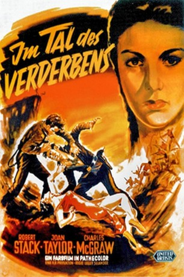

#8762 Im Tal des Verderbens
Alternativ: War Paint
 
 IMDB-Wertung: 5.9 / 10
IMDB-Wertung: 5.9 / 10  Metascore: 0
Metascore: 0 
Lieutenant Billings (Robert Stack) und seine kleine Kavallerie-Einheit sollen einem Indianerstamm den Friedensvertrag überbringen. Das Ultimatum läuft in wenigen Tagen ab. Ihr beschwerlicher Ritt durch die Wüste wird zum Albtraum: Eines Morgens sind ihre Pferde plötzlich fort, die nächste Wasserstelle wurde vergiftet. Wer ist der Verräter? Das schmale Budget merkt man dem Film zwar an, dass aber im grandiosen Death Valley gedreht wurde, reißt vieles raus.
Jahr: 1953
Dauer: 81 Minuten
FSK: 16
Land: USA Studio: A United Artists ReleaseTonspuren: DD5.1 - ,
Untertitel:
Auflösung: 1080p (1920x1080) Größe: 7649 MB
Genre: Abenteuer, Krieg, Western
Regisseur: Lesley Selander
Drehbuch: Richard Alan Simmons
Soundtrack: Arthur Lange, Emil Newman
Darsteller:
Datei: X:\HD-Western-1900-1959\Im Tal des Verderbens (1953, FSK16, 1920x1080).mkv seit 27.04.2018
Festplatte: HD Eastern+Western
 Es gibt insgesamt 98 Filme in der Gruppe 'HD-Western-1900-1959'
Es gibt insgesamt 98 Filme in der Gruppe 'HD-Western-1900-1959'